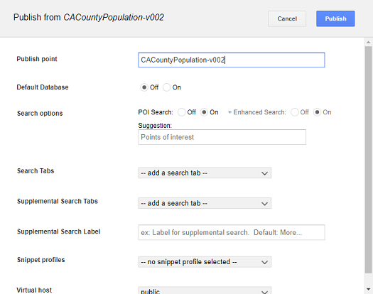
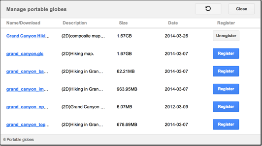

Publish databases and portables¶
When you publish a Fusion database, you select the database you want to publish, specify a publish point, then apply publishing options in the Publish dialog. Before you publish a Fusion database, you must register it by pushing it to GEE Server.
With portable files, the process is a little different. Instead, first you register your portable globes and maps in the Manage Portables dialog before publishing them. Registering a portable globe or map is similar to pushing a database from Fusion.
Publish a Fusion database
To publish a Fusion database:
In the GEE Server Admin console, click Databases.
Check the box next to the database or portable to publish.
Click the Publish button to open the Publish dialog.

Specify a Publish point, which is where you access the database or portable. For example, if you specify sanfrancisco, it will be accessible from myserver.mydomainname.com/sanfrancisco.
Note
When publishing a database, the publish point you specify is case-insensitive. Upper and lower case are not differentiated. Make sure each publish point path name you specify is unique.
Specify the following options:
- POI Search (Fusion databases with search data only)
- Search Tabs (Fusion databases only)
- Snippet profile (Fusion 3D databases only)
Select a Virtual host.
Optionally enable Serve WMS.
Click the Publish button. The Databases page updates to indicate the published status of your database.
To register a portable globe or map:
In the GEE Server Admin console, click Databases.
Click Manage Portables to open the Manage portable globes dialog.

The list of globes and maps corresponds to the files located in the default
/opt/google/gehttpd/htdocs/cutter/globesdirectory.Click Register next to the globe or map that you want to make available for publishing on GEE Server. The registered globe or map appears in the list on the Databases page of the Admin console.
You can register as many portable globes or maps as you have listed in the dialog. Click Unregister to make a globe or map unavailable on GEE Server.
On the Databases page of the Admin console, check the box next to the portable globe or map you wish to publish.
Click Publish to open the Publish dialog.
Specify a Publish point, where the portable will be accessible from. For example, if you specify grandcanyon, it will be accessible from myserver.mydomainname.com/grandcanyon.
Note
When publishing a database, the publish point you specify is case-insensitive. Upper and lower case are not differentiated. Make sure each publish point path name you specify is unique.
Select a Virtual host.
Click the Publish button. The Databases page updates to indicate the published status of your portable globe or map.
Learn more